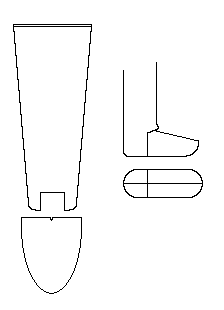

Unlike most of the items presented here, this is based on a compilation of a number of hose fragments found at Baynards Castle Dock - specifically finds: [55] <1645/2B> TB 41; [55] <1645/5> TB42; [79] <1830/4> TB51; and [150] <3612.1> TB 78. All are mixed spinning wool tabby cloth.
Go to - Hose - Hose Page; London Site Page
Some Clothes of the Middle Ages -- London Hose, by I. Marc Carlson, Copyright 1998
This page is given for the free exchange of information, provided the Author's Name is
included in all future revisions, and no money change hands, other than as expressed in
the Copyright Page.